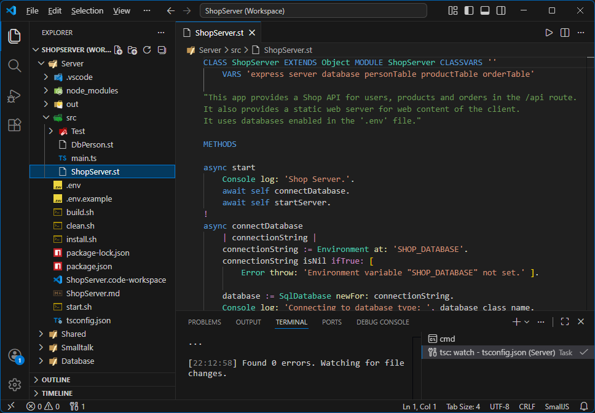

So in this tutorial, we will just be examining the Example Shop Server.
The Shop Server app has:
- A static web server for the Shop Client to browse to.
- APIs for user login and requesting products and orders.
- A database connection to retrieve these. We'll use SQLite.
Start by navigating the folder
./Examples/Shop/Server .
Open the file
ShopServer.code-workspace with VSCode.
Then open file
src/ShopServer.st. in VSCode.
The result should look something like this:
